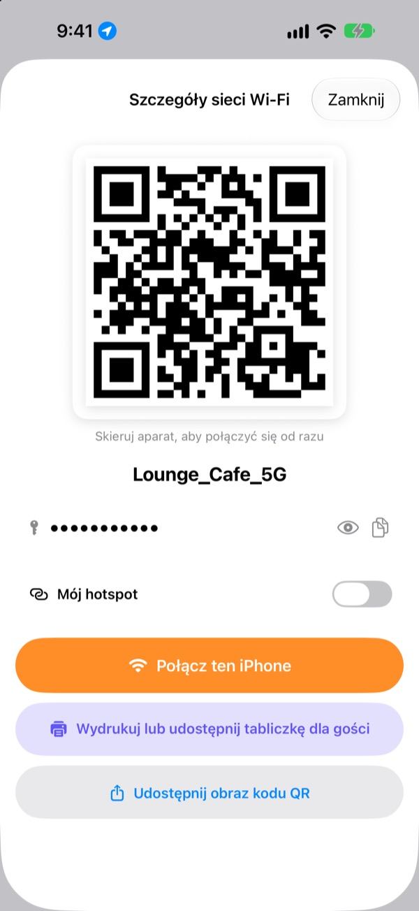
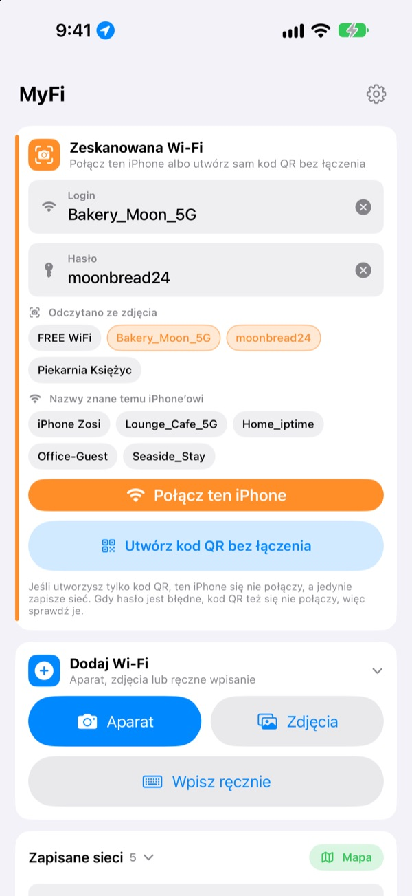
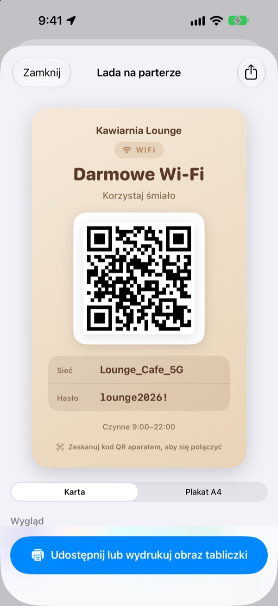
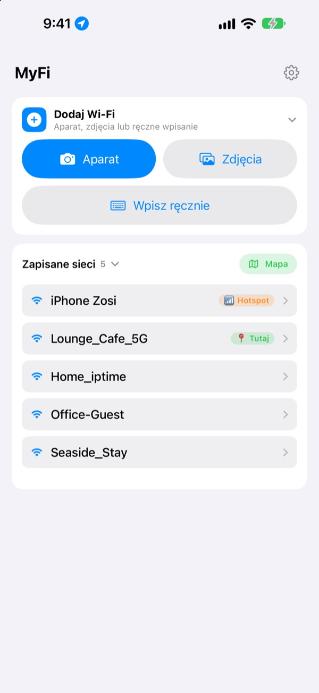

Koniec z dyktowaniem hasła.
Pokaż kod QR.
Znajomi tylko celują aparatem i już są w sieci. Tabliczka na ścianie kawiarni? Jedno zdjęcie i ten iPhone się łączy. Koniec z literówkami przy przepisywaniu.
Wszystkie funkcje są bezpłatne. iPhone z iOS 17 lub nowszym.

Zrób kod QR swojej sieci Wi-Fi
Zmień nazwę albo hasło, a tabliczka od razu się zmieni. Wyceluj w nią aparat telefonu, a naprawdę pojawi się propozycja połączenia.
„Jakie było hasło do Wi-Fi?” Który raz dzisiaj?
Dyktujesz je i mylisz wielkie litery. Przepisujesz tabliczkę ze ściany i mylisz 0 z O. A potem tłumaczysz wszystko od nowa. MyFi sprowadza to do jednego zdjęcia i jednego kodu QR.
Zdjęcie i jesteś w sieci
Sfotografuj tabliczkę z Wi-Fi albo paragon lub wybierz zdjęcie z biblioteki. MyFi odczyta nazwę sieci i hasło i połączy ten iPhone. Jeśli na tabliczce jest też kod QR, odczyta go najpierw, żeby dane były dokładne.
Gdy tekst jest niewyraźny, przeciągnij fragment ze zdjęcia do pola nazwy lub hasła.

Tabliczka dla gości z wydrukiem
Wybierz jeden z 7 motywów i dodaj nazwę, logo oraz wiersze, np. godziny otwarcia. Wybierz kartę albo pionowy plakat A4, zapisz jako obraz lub od razu wydrukuj przez AirPrint.
Trzymaj kilka tabliczek, po jednej na lokal czy stolik, i zmieniaj je, kiedy chcesz.

Miejsca, do których wracasz, są na górze
Sieci, z którymi się łączysz albo które udostępniasz, zapisują się razem z miejscem. Gdy wrócisz, ta sieć będzie na górze listy, a wszystkie zapisane miejsca zobaczysz na mapie.
Postaw kod QR najczęściej udostępnianej sieci jako widżet na ekranie początkowym lub ekranie blokady. Gdy gość zapyta, po prostu pokaż ekran.

Zaczynasz w trzech krokach
- 1
Otwórz aplikację
Raz poprosi o lokalizację, bo iOS podaje nazwę bieżącej sieci Wi-Fi tylko aplikacjom z tym dostępem.
- 2
Zrób zdjęcie lub wpisz
Sfotografuj tabliczkę albo raz wpisz hasło do swojej sieci.
- 3
Połącz albo pokaż
Połącz ten iPhone albo pokaż kod QR aparatowi drugiej osoby.
Gdzie co znaleźć
- Połączenie ze zdjęcia tabliczki
Dodaj Wi-Fi, potemAparatlubZdjęcia, potemPołącz ten iPhone- Ręczne wpisanie danych
Dodaj Wi-Fi, potemWpisz ręcznie- Tylko kod QR
Utwórz kod QR bez łączenia- Wysłanie kodu QR w wiadomości
- Stuknij zapisaną sieć, potem
Udostępnij obraz kodu QR - Tabliczka dla gości
- Stuknij zapisaną sieć, potem
Wydrukuj lub udostępnij tabliczkę dla gości - Własny hotspot jako kod QR
- Stuknij zapisaną sieć i włącz
Mój hotspot - Połącz lub udostępnij jednym ruchem
- Na liście przesuń w prawo, by się połączyć, w lewo, by udostępnić
- Zapisane miejsca
MapaobokZapisane sieci- Kod QR na ekranie początkowym
- Przytrzymaj ekran początkowy i dodaj widżet MyFi
Kod QR Wi-Fi
Kod QR otworzysz od razu także przez Siri lub aplikację Skróty.
Wszystkie funkcje są bezpłatne
Za darmo
- Łączenie z Wi-Fi ze zdjęcia
- Tworzenie kodów QR i udostępnianie jako obraz
- Tabliczki dla gości w 7 motywach, karta lub plakat A4, druk przez AirPrint
- Widżety na ekran początkowy i ekran blokady
- Mapa zapisanych sieci
- Bez reklam i bez zakładania konta
Napiwek (dobrowolny)
- Jeśli aplikacja Ci się podoba, możesz wesprzeć jej rozwój napiwkiem
- Napiwek niczego nie odblokowuje. Bez niego masz wszystkie funkcje
Napiwek to niewielka, jednorazowa płatność.
Bez subskrypcji i bez płatnych funkcji.
Częste pytania
Dlaczego muszę sam wpisać hasło?
iOS nie pozwala żadnej aplikacji odczytać haseł Wi-Fi zapisanych na urządzeniu. Dlatego MyFi rozpoznaje nazwę sieci, a hasło wpisujesz tylko raz. Potem aplikacja używa zapisanego.
Nie widzę nazwy sieci, z którą jestem połączony.
iOS podaje nazwę Wi-Fi tylko aplikacjom z dostępem do lokalizacji. Zezwól MyFi w Ustawienia › Prywatność i ochrona › Usługi lokalizacji. Lokalizacja służy tylko do odczytu nazwy sieci i rozpoznawania miejsc, do których wracasz.
Nazwa lub hasło zostały źle odczytane.
Podejdź bliżej i zrób zdjęcie prosto. Jeśli nadal się nie zgadza, przeciągnij właściwy fragment ze zdjęcia do pola albo popraw ręcznie. Jeśli tabliczka ma kod QR Wi-Fi, MyFi go odczyta i wpisze dokładne dane.
Jakie tabliczki potrafi odczytać?
Najlepiej radzi sobie z tabliczkami po angielsku lub koreańsku z etykietami typu ID, PW, SSID, Network czy Password. Nawet bez etykiet znajdzie wiersz, który wygląda jak hasło. Kod QR Wi-Fi na tabliczce odczytuje dokładnie w każdym języku.
Jak ktoś połączy się moim kodem QR?
Na iPhonie i Androidzie wystarczy wycelować wbudowany aparat w kod i stuknąć propozycję połączenia. Żadna aplikacja nie jest potrzebna.
Czy inni zobaczą moje hasło?
Kod QR zawiera standardowe dane logowania do Wi-Fi. O udostępnieniu zawsze decydujesz Ty, a na tabliczce dla gości możesz ukryć hasło.
Dlaczego nie mogę połączyć się z własnym hotspotem?
Hotspot osobisty iPhone’a to ten sam telefon, który nie może połączyć się sam ze sobą. Włącz Mój hotspot, a MyFi potraktuje go jako kod QR do rozdawania.
Gdzie trafiają dane o moich sieciach?
MyFi nie ma serwera. Nazwy sieci, hasła, wyniki rozpoznawania zdjęć i lokalizacje są przetwarzane i przechowywane tylko na Twoim urządzeniu. Bez reklam i śledzenia. Aplikacja wysyła do Apple iCloud tylko anonimowe statystyki użycia i raporty błędów, żeby można ją było poprawiać.
Na jakich urządzeniach działa?
Na iPhonie z iOS 17 lub nowszym. Aplikacja jest dostępna w 24 językach.
Pytania lub uwagi? Napisz na leeo@kakao.com. Zwykle odpowiadam w ciągu 2–3 dni.